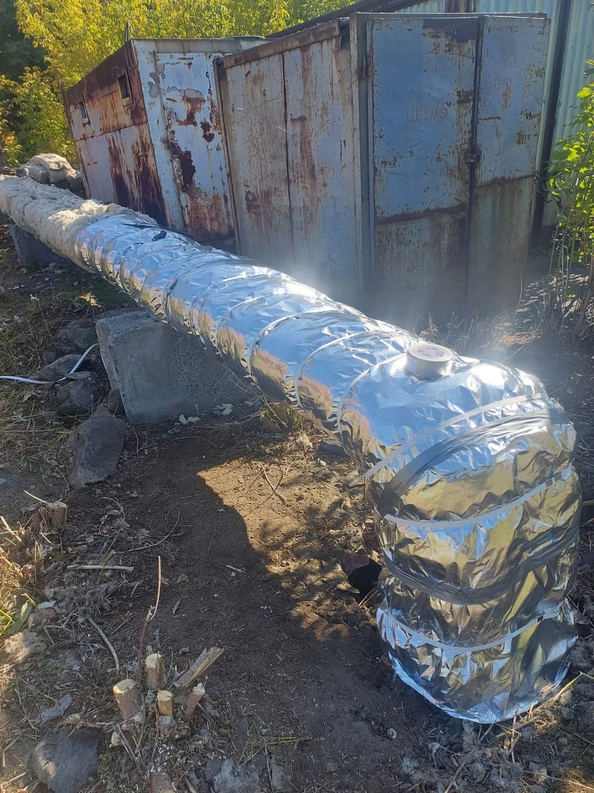
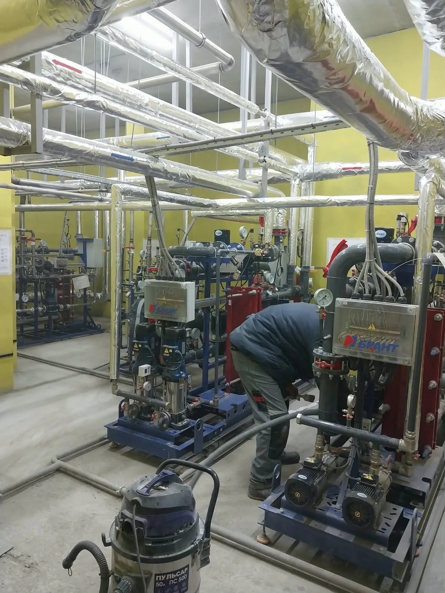
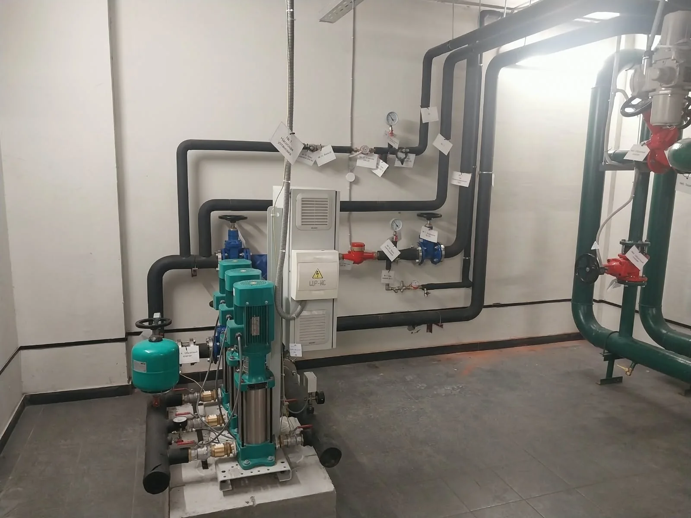
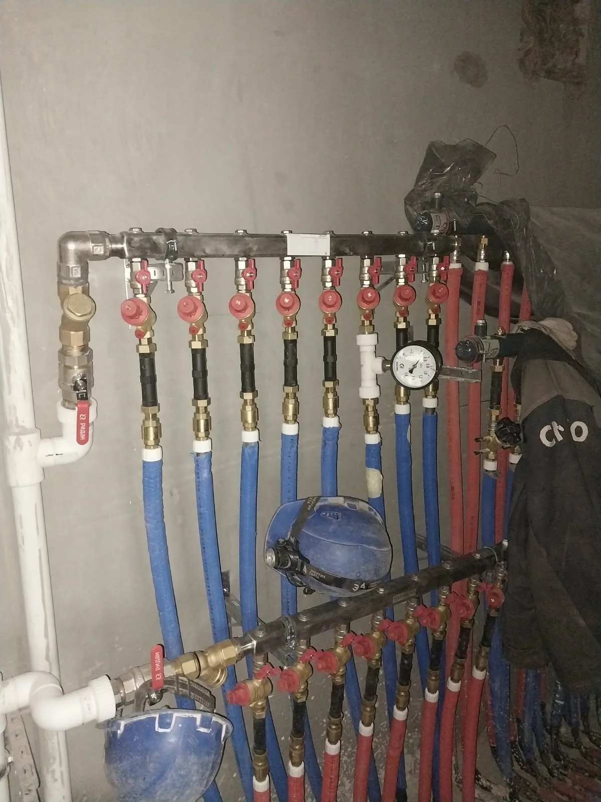
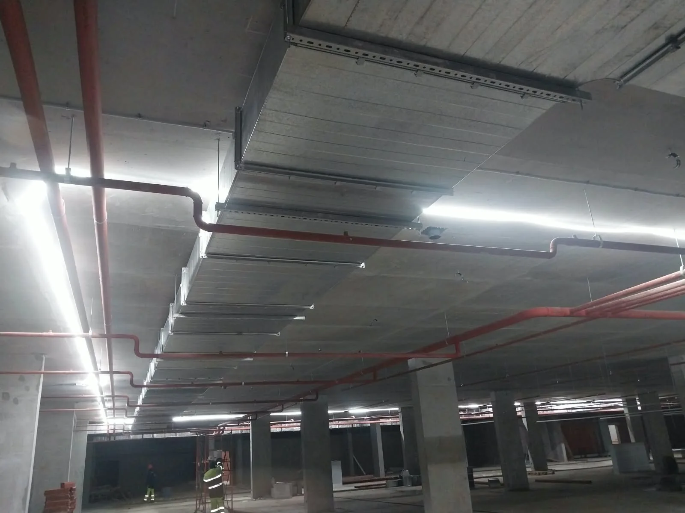
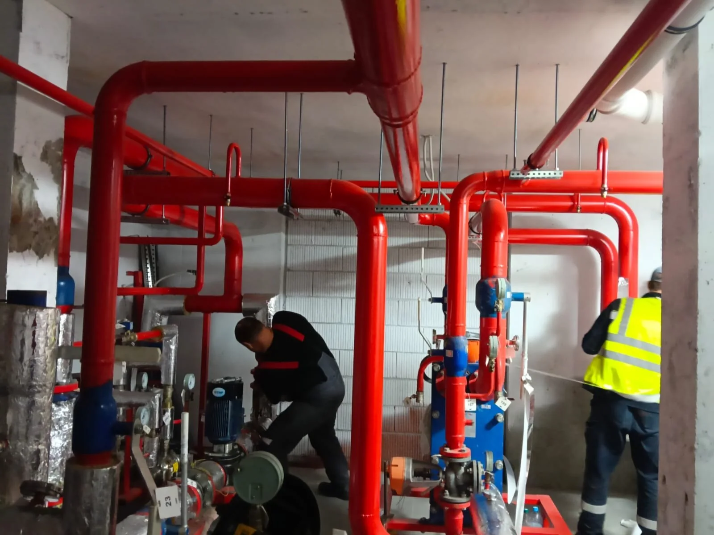

5 фото
5 фотоНаружные сети
Каналы наружных инженерных сетей
Железобетонные лотки и камеры на открытом участке трассы.
Смотреть работуНаружные сети, технические помещения и детали монтажа. Откройте работу, чтобы посмотреть описание и все фотографии.
9 работ · 30 фото
5 фотоНаружные сети
Железобетонные лотки и камеры на открытом участке трассы.
Смотреть работу
6 фотоТеплоизоляция
Изоляция прямых участков, поворотов и вертикальных отводов.
Смотреть работу
5 фотоВнутренние системы
Обвязка оборудования, арматура и теплоизоляция в техническом помещении.
Смотреть работу
3 фотоВнутренние системы
Насосы, шкаф управления и разводка трубопроводов внутри здания.
Смотреть работу
3 фотоВнутренние системы
Распределительные коллекторы с отдельными отводами и кранами.
Смотреть работу
3 фотоВнутренние системы
Подвесная прокладка трубопроводов под перекрытием паркинга.
Смотреть работу 2 фото
2 фотоНаружные сети
Подготовка участка и работа с трубопроводами между корпусами.
Смотреть работу 2 фото
2 фотоНаружные сети
Сварочные работы на стыках стального трубопровода в траншее.
Смотреть работу
1 фотоВнутренние системы
Монтажные работы в помещении с трубопроводами и насосным оборудованием.
Смотреть работуРасскажите, какие работы нужны и где находится объект.